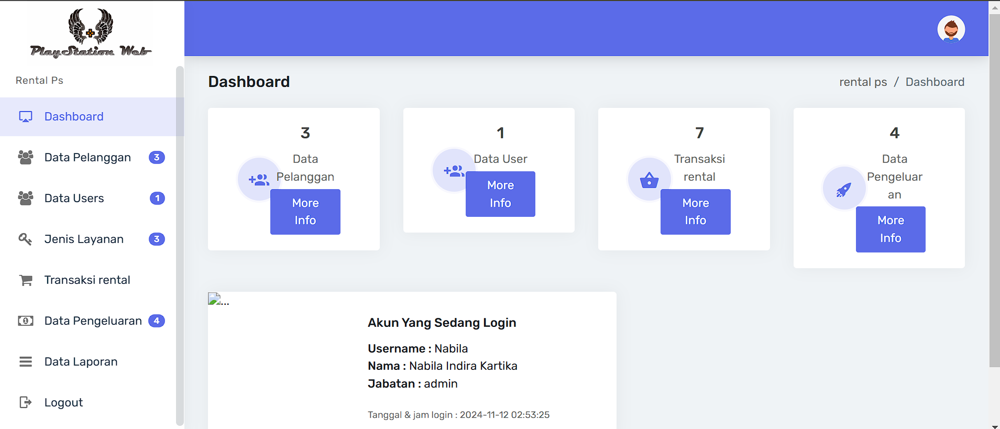
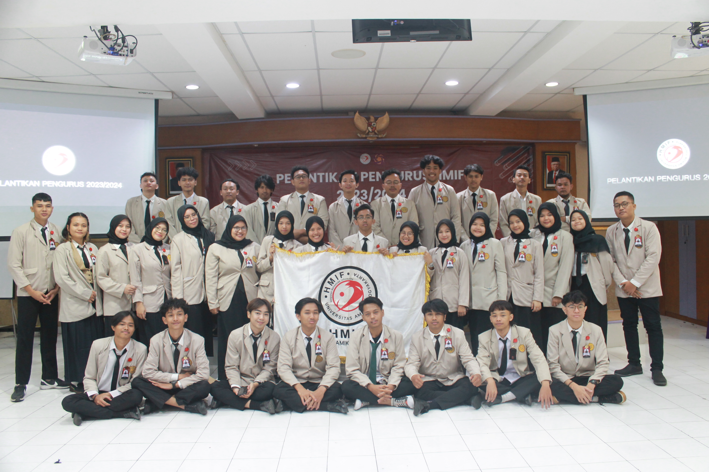
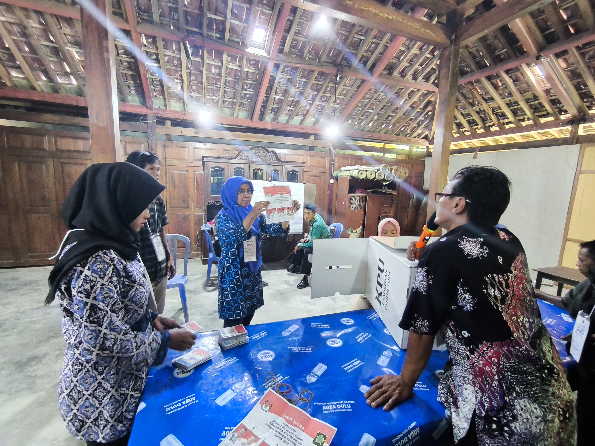
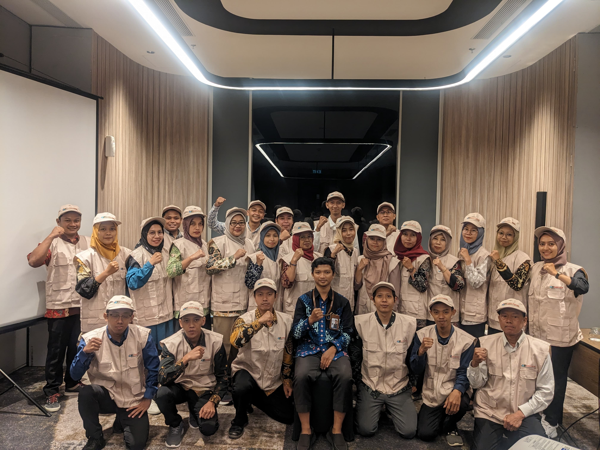
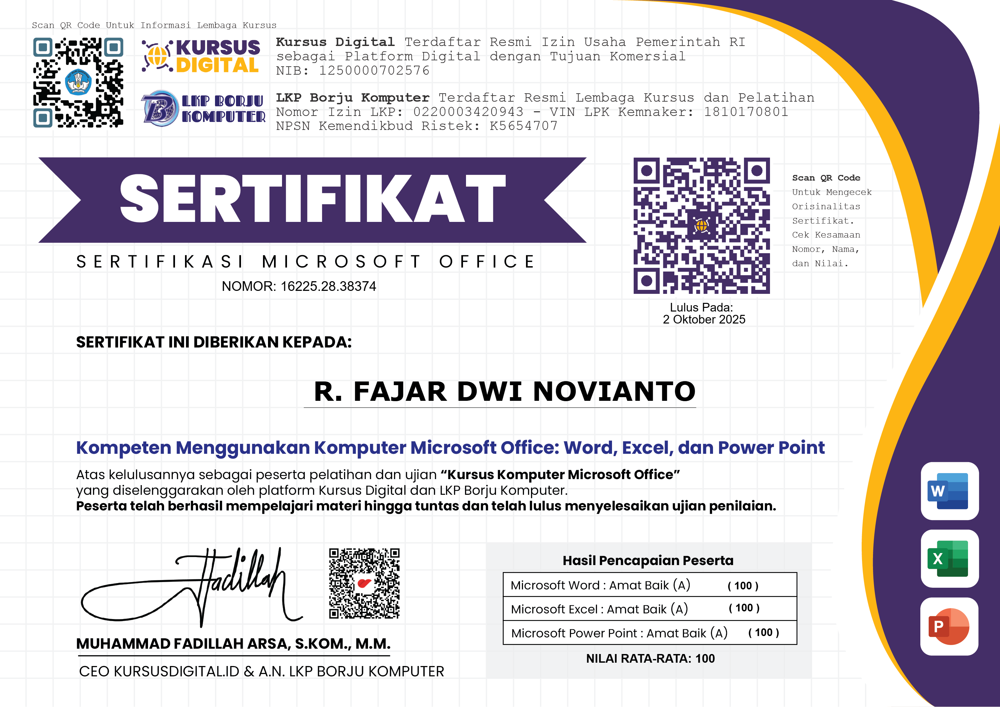
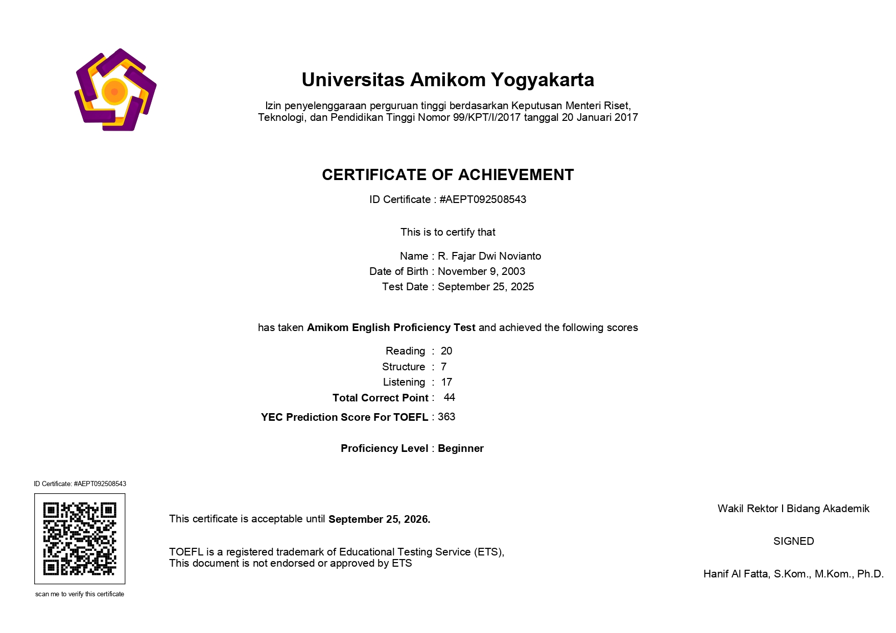

Sebagai lulusan baru Sarjana Informatika dengan predikat cumlaude (IPK 3.6), saya mendedikasikan fokus akademis saya pada bidang web development. Saya percaya bahwa teknologi web adalah alat yang kuat untuk memecahkan masalah nyata. Pengalaman saya tidak hanya terbatas pada dunia coding. Melalui keterlibatan aktif dalam kegiatan organisasi dan peran administratif, saya belajar bagaimana mengelola proyek, berkolaborasi dalam tim, dan memastikan setiap detail pekerjaan terselesaikan dengan baik. Kombinasi unik antara pemahaman teknis dan keterampilan manajerial ini memungkinkan saya untuk menjembatani kebutuhan bisnis dengan solusi digital yang efektif.
Bahasa: PHP, JavaScript, HTML, CSS, SQL
Framework/Library: Laravel, Vue.js, Leaflet.js, Cesium
Tools: Git, Docker, Figma, Vite
Software: Microsoft Office Suite Tools & Google Workspace
Manajemen: Manajemen Data, Penjadwalaan
Proses: Otomatisasi, Pengarsipan, Presentasi

Pengembangan sistem pemetaan digital interaktif berbasis storymap. Mengimplementasikan pustaka Leaflet dan Cesium untuk peralihan mode peta 2D/3D. Fitur mencakup penanganan data layer GeoJSON dengan simbologi dinamis dari *database*, serta integrasi fitur search layer secara UI/UX pada footer sidebar untuk alur kerja operasional yang lebih bersih.

Sistem manajemen berbasis web untuk rental Playstation, mencakup data pelanggan, transaksi, dan laporan.

Website Dashboard untuk manajemen kafe yang melacak bahan baku, penjualan, dan laporan stok secara real-time.

Membentuk program kerja dan Mengawasi Pelaksanaan Program Kerja.

Menyelenggaran Pemungutan dan Perhitungan Suara di TPS Serta mendata pemilih yang berpartisipasi melakukan pencoblosan.

Mencatat dan Mengumpulkan data sosial serta ekonomi masyarakat langsung di lapangan menggunakan aplikasi khusus.

Dikeluarkan oleh LKP Borju Komputer. Dengan Hasil Capaian adalah Expert Microsoft Word, Excel, dan PowerPoint

Dikeluarkan oleh Cognitive Class. Berhasil menyelesaikan dan menerima nilai kelulusan di Pyton 101 untuk ilmu data

Dikeluarkan oleh Universitas Amikom Yogyakarta. Dengan Hasil capaian Test adalah Memiliki Level Proficiency : Beginner.
Silakan hubungi saya melalui email atau telepon.
fajarraden9019@gmail.com